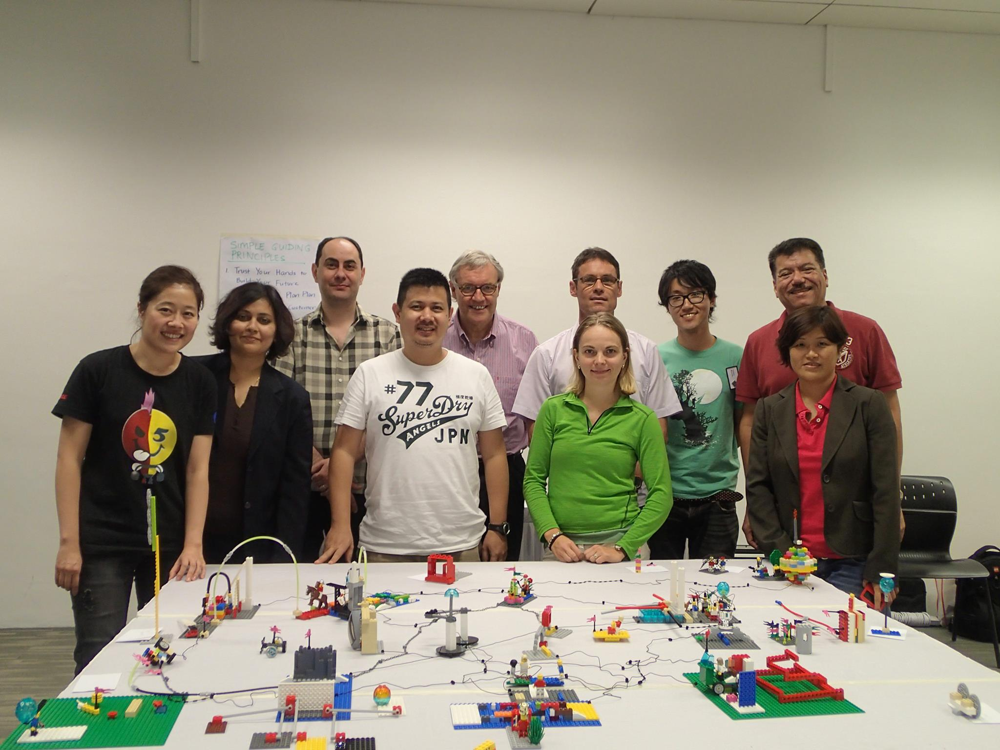

「理解はしているが、行動が変わらない。」「会議では誰も本音を言わない。」 「ビジョンを語っても、チームに伝わらない。」—— これらは多くの組織が直面する共通の壁です。
原因のひとつは、言語化できない思考・感情・直観が、対話の外に置き去りにされていることです。 人の思考の多くは、言葉になる前に体や手の動きとして現れます。 LEGO® SERIOUS PLAY® は、その「言葉になる前のもの」を形にする手法です。
言葉より先に、手と体が知っている。
きづきくみたての「くみたて」は、
LEGO®ブロックで文字通り実現する。
「理解はしているが、行動が変わらない。」「会議では誰も本音を言わない。」 「ビジョンを語っても、チームに伝わらない。」—— これらは多くの組織が直面する共通の壁です。
原因のひとつは、言語化できない思考・感情・直観が、対話の外に置き去りにされていることです。 人の思考の多くは、言葉になる前に体や手の動きとして現れます。 LEGO® SERIOUS PLAY® は、その「言葉になる前のもの」を形にする手法です。
「意見は？」と聞かれても沈黙。本音を言語化する前に自己検閲が働いてしまう。
左脳的に「理解」はしても、腹落ちしていないから行動が変わらない。
ブロックを積む手の動きの中で、自分でも気づいていなかった思考が現れる。
LEGO® SERIOUS PLAY®（LSP）は、LEGO グループが開発したファシリテーション手法です。参加者はLEGO®ブロックで自分の思考・感情・ビジョンを「組み立て」、そのモデルを使って対話します。「遊び（Play）」の力を活用しながら、真剣な（Serious）問いに向き合います。
全員で組み立て、全員が話す——誰かが沈黙したり、特定の人だけが発言するということが起きにくい、平等な発言の場が生まれます。
参加者全員が向き合う「問い」を立てる。答えより先に、問いが人を動かす。
言葉より先に手を動かす。ブロックで思考と感覚を形にする。
互いのモデルを通じて問いを深め、新たな洞察が生まれる。そしてまた①へ。
自分のモデルについて語る。「作ったもの」が会話の安全な入口になる。
このサイクルが繰り返されることで、思考と対話が螺旋状に深まっていく

欧州・アジアを中心に、世界中のファシリテーターと実践の知見を共有しながら、今もこの道の探究を深めている。
LSPは単体でも強力ですが、きづきくみたての他のプログラムと組み合わせることで、それぞれの効果が倍増します。
デモクラシーフィットネスは「対話力の測定と改善」のプログラム。しかし「意見を言う」「反対意見を表現する」筋肉は、言葉だけで鍛えようとすると怖い。
LSPを入口にすると、自分のモデルについて話すという安全な構造の中で、自然に意見・傾聴・共感の筋肉が動き始めます。
グッドスパイラルは「好きなこと・大切にしていること」を起点にする。でも「好きなことは何ですか？」と聞かれても、日本人は言葉がなかなか出てきません。
LSPでブロックを使って先に形にすると、「これが私の大切にしていることだ」という気づきが、手から自然に生まれます。
組織の目指す姿を全員で建て、共通イメージをつくる。
互いの価値観・強みを形にして共有し、チームの土台をつくる。
「自分がなりたい姿」「大切にしたいこと」を言葉になる前に形にする。
行動変容を伴う研修の導入として、腹落ち感のある場をつくる。
言語化しにくい「もやもや」を形にし、チームで課題を可視化する。
言葉が出にくい場面でも、手を動かすことで対話が生まれる。
LSPは、体験しないと伝わらない手法です。
ワークショップのご相談・体験セッションのお問い合わせはメールで。
kizukikumitate@gmail.com へメールが開きます